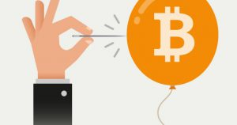
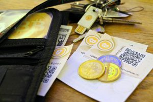
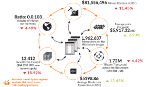
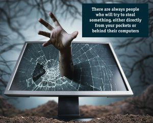
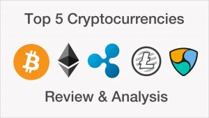

<?xml version="1.0" encoding="UTF-8"?><rss version="2.0"
	xmlns:content="http://purl.org/rss/1.0/modules/content/"
	xmlns:wfw="http://wellformedweb.org/CommentAPI/"
	xmlns:dc="http://purl.org/dc/elements/1.1/"
	xmlns:atom="http://www.w3.org/2005/Atom"
	xmlns:sy="http://purl.org/rss/1.0/modules/syndication/"
	xmlns:slash="http://purl.org/rss/1.0/modules/slash/"
	>

<channel>
	<title>Bitcoin &#8211; BitRig</title>
	<atom:link href="https://www.bitrig.co.za/category/bitcoin/feed/" rel="self" type="application/rss+xml" />
	<link>https://www.bitrig.co.za</link>
	<description>Bitmain Mines &#124; Bitrig Start.Mining</description>
	<lastBuildDate>Mon, 05 Mar 2018 09:46:33 +0000</lastBuildDate>
	<language>en-ZA</language>
	<sy:updatePeriod>hourly</sy:updatePeriod>
	<sy:updateFrequency>1</sy:updateFrequency>
	<generator>https://wordpress.org/?v=4.8.2</generator>
	<item>
		<title>Inside Cryptocurrency ATM’s</title>
		<link>https://www.bitrig.co.za/2018/01/15/inside-cryptocurrency-atms/</link>
		<pubDate>Mon, 15 Jan 2018 09:53:49 +0000</pubDate>
		<dc:creator><![CDATA[rigcrew]]></dc:creator>
				<category><![CDATA[Bitcoin]]></category>

		<guid isPermaLink="false">https://www.bitrig.co.za/?p=37056</guid>
		<description><![CDATA[The first bitcoin ATM was in Vancouver, Canada and opened on the 29th of October 2013. If you don’t know yet, a bitcoin ATM operates like any other regular ATM, except it lets you exchange your cryptocurrencies for cash. We took a closer look at the history of cryptocurrency ATM’s and just how they work&#8230;]]></description>
				<content:encoded><![CDATA[<p><span style="font-weight: 400;">The first bitcoin ATM was in Vancouver, Canada and opened on the 29</span><span style="font-weight: 400;">th</span><span style="font-weight: 400;"> of October 2013. If you don’t know yet, a bitcoin ATM operates like any other regular ATM, except it lets you exchange your cryptocurrencies for cash. We took a closer look at the history of cryptocurrency ATM’s and just how they work on the inside.</span></p>
<h4><b>South African Bitcoin ATM’s</b></h4>
<p><span style="font-weight: 400;">Did you know that SA has Bitcoin ATM’s already? The first was set up in Midrand (Kyalami) at the Metroman salon. Yes, there are luckily more. You can keep an eye on CoinATMRadar to find out where </span><i><span style="font-weight: 400;">else</span></i><span style="font-weight: 400;"> you can find bitcoin ATM’s in </span><a href="https://coinatmradar.com/country/197/bitcoin-atm-south-africa/"><span style="font-weight: 400;">South Africa</span></a><span style="font-weight: 400;"> or the rest of the world.</span></p>
<h4><b>How does it work?</b></h4>
<p><span style="font-weight: 400;">Not sure what to do your first time at a cryptocurrency ATM? it’s pretty straightforward, though not everyone in the world is tech-savvy. Here’s an explanatory video of how to use the ATM once you’re in front of it thanks to </span><a href="https://www.youtube.com/watch?v=19tVcU4rZrU"><span style="font-weight: 400;">Knowledge is Power on YouTube.</span></a><span style="font-weight: 400;"> You can also take a look at </span><a href="http://www.businessinsider.com/how-to-use-a-bitcoin-atm-2017-9"><span style="font-weight: 400;">“How to Use a Bitcoin ATM” from Business Insider</span></a><span style="font-weight: 400;">.</span></p>
<h4><b>More Bitcoin ATM Maps</b></h4>
<p><span style="font-weight: 400;">Other countries have also begun to invest in Bitcoin ATM’s, and you should now be able to find one almost anywhere in the world – </span><a href="https://news.bitcoin.com/malta-entrepreneur-installs-nations-first-cryptocurrency-atm/"><span style="font-weight: 400;">Malta, for example, just got their first Cryptocurrency ATM</span></a><span style="font-weight: 400;">, too. If you’re traveling and in need of a bitcoin ATM, try some of these websites.</span></p>
<p><a href="https://www.buybitcoinworldwide.com/bitcoin-atms/"><span style="font-weight: 400;">BuyBitcoinWorldwide</span></a></p>
<p><a href="https://coinatmradar.com/"><span style="font-weight: 400;">BitcoinATMRadar</span></a></p>
<p><a href="http://www.btc-atms.com/"><span style="font-weight: 400;">Bitcoin ATM Locations</span></a></p>
<p><a href="http://www.google.com/patents/US9135787"><b>The Bitcoin ATM Patent</b></a><b> War</b></p>
<p><span style="font-weight: 400;">It turns out that the patent for cryptocurrency ATM’s are a hot commodity: In December 2017 it came to light that DNA Dynamics Inc. was about to buy the patent for Bitcoin ATM’s. What this means is that other manufacturers basing </span><i><span style="font-weight: 400;">off</span></i><span style="font-weight: 400;"> that patent in the US will, basically, have to pay royalties for the use thereof. Whoops…</span></p>
<h4><b>Inside Bitcoin ATM’s</b></h4>
<p><span style="font-weight: 400;">Thanks to websites like Google Patents, we can go digging in the patent archives to find out a little more about how bitcoin ATM’s work.</span></p>
<p><b>The “bitcoin kiosk” </b><span style="font-weight: 400;">is registered as US Patent 9135787 B1, and was filed on the 4</span><span style="font-weight: 400;">th</span><span style="font-weight: 400;"> of April 2014. The inventors are listed as Mark Russell and John W. Russell.</span></p>
<p><b>According to the patent, </b><span style="font-weight: 400;">the Bitcoin ATM contains “a bill validator, a bill dispenser, printer, </span><span style="font-weight: 400;">code scanner, touch screen display, computer power in the form of a processor / controller and internet connection means. </span></p>
<p><span style="font-weight: 400;">It also says “the stand-alone device may contain other components such as a backup power supply.” </span></p>
<p><b>Verification is offered with super safe, high-tech options and offers several levels of security for users. </b><span style="font-weight: 400;">First, the user enters their phone number registered to their Bitcoin wallet. Second, an OTP is sent to the user and entered into the ATM. Third, the user enters their personal PIN number. Fourth, the machine then reads the user’s palm vein pattern. </span></p>
<p><b>The last two verification steps</b><span style="font-weight: 400;"> to access your bitcoin involves the user posing for a photo and scanning their passport. You can read the entire patent over here on </span><a href="https://www.google.com/patents/US9135787"><span style="font-weight: 400;">Google Patents</span></a><span style="font-weight: 400;">.</span></p>
<p><span style="font-weight: 400;">See why you might want to check out the guide at the top </span><i><span style="font-weight: 400;">before</span></i><span style="font-weight: 400;"> making your first trip to a bitcoin ATM? </span></p>
]]></content:encoded>
			</item>
		<item>
		<title>Bitcoin News: January 2018 Roundup</title>
		<link>https://www.bitrig.co.za/2018/01/15/bitcoin-news-january-2018-roundup/</link>
		<pubDate>Mon, 15 Jan 2018 09:19:15 +0000</pubDate>
		<dc:creator><![CDATA[rigcrew]]></dc:creator>
				<category><![CDATA[Bitcoin]]></category>

		<guid isPermaLink="false">https://www.bitrig.co.za/?p=37049</guid>
		<description><![CDATA[A smart investor knows their investment, and we’ve kept an eye on breaking cryptocurrency and bitcoin news that you might’ve missed. Here’s what happened to cryptocurrency’s in the news so far for January: Let us know if you spotted any news we should include for our next roundup! KFC in Canada Now Accepts Bitcoin https://www.fin24.com/Tech/News/kfc-in-canada-now-accepts-bitcoin-20180112&#8230;]]></description>
				<content:encoded><![CDATA[<p><span style="font-weight: 400;">A smart investor knows their investment, and we’ve kept an eye on breaking cryptocurrency and bitcoin news that you might’ve missed. Here’s what happened to cryptocurrency’s in the news so far for January: Let us know if you spotted any news we should include for our next roundup!</span></p>
<h4><b>KFC in Canada Now Accepts Bitcoin</b></h4>
<p><a href="https://www.fin24.com/Tech/News/kfc-in-canada-now-accepts-bitcoin-20180112" target="_blank" rel="noopener"><b>https://www.fin24.com/Tech/News/kfc-in-canada-now-accepts-bitcoin-20180112</b></a></p>
<p><span style="font-weight: 400;">As it turns out, not just will KFC stores in Canada be testing bitcoin as a payment option in stores, they will also run the limited edition Bitcoin Bucket offer containing “10 original recipe tenders, waffle fries, a medium side, a medium gravy and two dips” &#8211; hey, why doesn’t South Africa get the option of waffle fries? We want our fries!</span></p>
<h4><b>Bitcoin Conference Won’t Let You Pay with Bitcoin</b></h4>
<p><a href="https://nakedsecurity.sophos.com/2018/01/12/bitcoin-conference-wont-let-you-pay-with-bitcoin/" target="_blank" rel="noopener"><span style="font-weight: 400;">https://nakedsecurity.sophos.com/2018/01/12/bitcoin-conference-wont-let-you-pay-with-bitcoin/</span></a></p>
<p><span style="font-weight: 400;">According to Naked Security, in a weird twist of irony, the Bitcoin Conference attendance fee is $1, 000 – but not payable in bitcoin, for some reason.</span></p>
<h4><b>Goldman-Sachs Caves: Bitcoin is Money</b></h4>
<p><a href="https://www.forbes.com/sites/kenrapoza/2018/01/10/goldman-sachs-caves-bitcoin-is-money/#73b7d1c474b7" target="_blank" rel="noopener"><span style="font-weight: 400;">https://www.forbes.com/sites/kenrapoza/2018/01/10/goldman-sachs-caves-bitcoin-is-money/#73b7d1c474b7</span></a></p>
<p><span style="font-weight: 400;">The global investment banking group Goldman-Sachs has admitted in a public statement that bitcoin and cryptocurrency is “as good as money” &#8211; it’s taken a while for cryptocurrency to gain mainstream acceptance, and we’re glad to see that more progress is being made in the field. Cheers!</span></p>
<h4><b>Bitcoin-only charity pledges up to $4 million for PTSD research</b></h4>
<p><a href="https://cointelegraph.com/news/bitcoin-only-charity-pledges-up-to-4-million-for-ptsd-research" target="_blank" rel="noopener"><span style="font-weight: 400;">https://cointelegraph.com/news/bitcoin-only-charity-pledges-up-to-4-million-for-ptsd-research</span></a></p>
<p><span style="font-weight: 400;">According to Coin Telegraph, a bitcoin only charity has put their weight behind researching potential treatments for Post Traumatic Stress Disorder, and they’ve pledged up to four million for the cause. Cryptocurrency has had a massive impact on the world so far, and we’d like to see more charitable efforts coming from the massively powerful world of cryptocurrencies.</span></p>
<h4><b>SARS to provide tax rules on Bitcoin and other cryptocurrencies in next few months</b></h4>
<p><a href="https://businesstech.co.za/news/finance/218925/sars-to-provide-tax-rules-on-bitcoin-and-other-cryptocurrencies-in-next-few-months-report/" target="_blank" rel="noopener"><span style="font-weight: 400;">https://businesstech.co.za/news/finance/218925/sars-to-provide-tax-rules-on-bitcoin-and-other-cryptocurrencies-in-next-few-months-report/</span></a></p>
<p><span style="font-weight: 400;">According to an article on BusinessTech – and the spokesperson of SARS – South Africans can expect to see the South African Revenue Service (SARS) having their say on cryptocurrency in South Africa in a report expected to be released later this year.</span></p>
<h4><b>Reliance Jio planning own currency called JioCoin</b></h4>
<p><a href="http://www.livemint.com/Companies/AzdrYmQhYnq0TPiDUbZcSO/Reliance-Jio-planning-its-own-cryptocurrency-called-JioCoin.html" target="_blank" rel="noopener"><span style="font-weight: 400;">http://www.livemint.com/Companies/AzdrYmQhYnq0TPiDUbZcSO/Reliance-Jio-planning-its-own-cryptocurrency-called-JioCoin.html</span></a></p>
<p><span style="font-weight: 400;">One of the largest tech companies in India has just announced their entry into the cryptocurrency game with the start of a new currency called JioCoin. Will it work? At this point only time will tell what happens to players this new in the cryptocurrency world!</span></p>
<h4><b>Uproar over crackdown on cryptocurrencies divides South Korea</b></h4>
<p><a href="https://www.reuters.com/article/us-southkorea-bitcoin/uproar-over-crackdown-on-cryptocurrencies-divides-south-korea-idUSKBN1F10YG" target="_blank" rel="noopener"><span style="font-weight: 400;">https://www.reuters.com/article/us-southkorea-bitcoin/uproar-over-crackdown-on-cryptocurrencies-divides-south-korea-idUSKBN1F10YG</span></a></p>
<p><span style="font-weight: 400;">Okay, so cryptocurrencies aren’t popular in all parts of the world right now. Unfortunately, South Korea is one of those parts – and it’s, at least slightly, affected the value of bitcoin as a whole.</span></p>
<h4><b>Charitable cryptocurrency Wishcoin to generate funding for charities</b></h4>
<p><a href="https://fundraising.co.uk/2017/09/22/charitable-cryptocurrency-wishcoin-generate-funding-charities/#.WlkWtVSWbMw" target="_blank" rel="noopener"><span style="font-weight: 400;">https://fundraising.co.uk/2017/09/22/charitable-cryptocurrency-wishcoin-generate-funding-charities/#.WlkWtVSWbMw</span></a></p>
<p><span style="font-weight: 400;">Well, we said we like reading about more charitable acts in the world of bitcoin, and though this was posted right at the end of last year, we’d like to stick it in January’s news roundup. Wishcoin was set up as a cryptocurrency platform </span><i><span style="font-weight: 400;">specifically for donating to charity. </span></i><span style="font-weight: 400;">Definitely worth checking out, over here.</span></p>
<p>&nbsp;</p>
]]></content:encoded>
			</item>
		<item>
		<title>Bitcoin… in Afrikaans!</title>
		<link>https://www.bitrig.co.za/2018/01/15/bitcoin-in-afrikaans/</link>
		<pubDate>Mon, 15 Jan 2018 09:11:31 +0000</pubDate>
		<dc:creator><![CDATA[rigcrew]]></dc:creator>
				<category><![CDATA[Bitcoin]]></category>

		<guid isPermaLink="false">https://www.bitrig.co.za/?p=37046</guid>
		<description><![CDATA[Bitcoin and cryptocurrency is a pretty new concept in South Africa, but it’s already taken off at an incredible rate and more people are investing. Just a few questions… What on earth about cryptocurrency and bitcoin in other languages? We thought we’d take a closer look and collect some of the best resources, news articles&#8230;]]></description>
				<content:encoded><![CDATA[<p><b>Bitcoin and cryptocurrency is a pretty new concept in South Africa, </b><span style="font-weight: 400;">but it’s already taken off at an incredible rate and more people are investing. Just a few questions… What on earth about cryptocurrency and bitcoin in other languages? We thought we’d take a closer look and collect some of the best resources, news articles and word suggestions for cryptocurrency in the Afrikaans language. Geniet dit!</span></p>
<p><a href="https://af.wikipedia.org/wiki/Bitcoin" target="_blank" rel="noopener"><b>Bitcoin: Afrikaans Wikipedia</b></a></p>
<p><span style="font-weight: 400;">Did you know that Wikipedia also comes in Afrikaans? Here’s the Afrikaans Wikipedia entry for bitcoin</span></p>
<p><a href="http://www.dievryburger.co.za/2013/12/bitcoin-wat-is-dit" target="_blank" rel="noopener"><span style="font-weight: 400;">Bitcoin: Wat is dit?</span></a></p>
<p><span style="font-weight: 400;">This handy rundown of bitcoin and the basics was published Afrikaans newspaper Die Vryburger in December 2013.</span></p>
<p><a href="https://maroelamedia.co.za/tegnologie/digitaal/tyd-om-kennis-te-neem-van-bitcoin/" target="_blank" rel="noopener"><b>Tyd om kennis te neem van bitcoin</b></a><b>: Maroela Media</b></p>
<p><span style="font-weight: 400;">Bitcoin is huge – and impossible to ignore. Here’s a piece hosted on Afrikaans e-zine Maroela Media describing some bitcoin basics. (The article originally appeared in “Solidariteit Tydskrif” according to a footnote at the end of the piece.) </span></p>
<h4><b>Bitcoin: Alles wat jy wil weet</b></h4>
<p><a href="https://www.netwerk24.com/Sake/Ikt/Bitcoin-Alles-wat-jy-wil-weet-20151103" target="_blank" rel="noopener"><span style="font-weight: 400;">https://www.netwerk24.com/Sake/Ikt/Bitcoin-Alles-wat-jy-wil-weet-20151103</span></a></p>
<p><span style="font-weight: 400;">Written by Liane Mocke, this is another super-handy rundown of everything bitcoin in Afrikaans. You will need a subscription to Netwerk24 to read the full article. Published in November 2015.</span></p>
<h4><b>Bitcoin en digitale geldeenheid vir beginners</b></h4>
<p><a href="https://www.amazon.com/Bitcoin-Digitale-Geldeenhede-Beginners-Afrikaans-ebook/dp/B075N7K5DN" target="_blank" rel="noopener"><span style="font-weight: 400;">https://www.amazon.com/Bitcoin-Digitale-Geldeenhede-Beginners-Afrikaans-ebook/dp/B075N7K5DN</span></a></p>
<p><span style="font-weight: 400;">A short book for sale on Amazon about bitcoins, how they work and how you can start trading.</span></p>
<h4><b>RSG Geldsake</b></h4>
<p><a href="https://iono.fm/e/445257" target="_blank" rel="noopener"><span style="font-weight: 400;">https://iono.fm/e/445257</span></a></p>
<p><span style="font-weight: 400;">The radio program RSG Geldsake recently covered bitcoins, and you can listen to segments of the interview hosted live.</span></p>
<h4><b>Is virtuele geld die toekoms? RSGPlus</b></h4>
<p><a href="http://www.rsgplus.org/aktueel/wetenswaardig/bitcoin/" target="_blank" rel="noopener"><b>http://www.rsgplus.org/aktueel/wetenswaardig/bitcoin/</b></a></p>
<p><span style="font-weight: 400;">Yes, we do believe cryptocurrencies might just be the currency of the future. Hosted on RSGPlus, here’s another in-depth discussion about the value of bitcoin and just what we should be doing about it.</span></p>
<h4><b>Bitcoin: Waaroor gaan die bohaai? Solidariteit</b></h4>
<p><a href="https://finansies.solidariteit.co.za/bitcoin-waaroor-gaan-die-bohaai/" target="_blank" rel="noopener"><b>https://finansies.solidariteit.co.za/bitcoin-waaroor-gaan-die-bohaai/</b></a></p>
<p><span style="font-weight: 400;">Another link on local bitcoin news with a little bit of background on why the world has been going insane about cryptocurrencies and its possibility.</span></p>
<h4><b>Kom ons praat oor Bitcoin: Netwerk24</b></h4>
<p><a href="https://www.netwerk24.com/Sake/Muntslim/Beleggings/theo-vorster-kom-ons-praat-oor-bitcoin-20170822" target="_blank" rel="noopener"><b>https://www.netwerk24.com/Sake/Muntslim/Beleggings/theo-vorster-kom-ons-praat-oor-bitcoin-20170822</b></a></p>
<p><span style="font-weight: 400;">By writer Theo Vorster (and part of the Muntslim series), this article explores cryptocurrency in Afrikaans after the writer received several queries asking for his opinion on the matter.</span></p>
<h4><b>Bitcoin terms in Afrikaans</b></h4>
<p><span style="font-weight: 400;">Having a conversation with someone in Afrikaans and not entirely sure what to call something? From previously published articles, we can gather that </span><b>cryptocurrencies</b><span style="font-weight: 400;"> translate to </span><b>kripto-geldeenhede</b><span style="font-weight: 400;">, and </span><b>blokchain</b><span style="font-weight: 400;"> can be referred to as a </span><b>blok-ketting.</b><span style="font-weight: 400;"> For now, it seems that a Bitcoin remains a Bitcoin, and that there are still many terms out there </span><i><span style="font-weight: 400;">lacking</span></i><span style="font-weight: 400;"> a proper translation.</span></p>
<p><span style="font-weight: 400;">From other online resources, we can also tell that </span><b>a bit</b><span style="font-weight: 400;"> is known as a</span><b> bis</b><span style="font-weight: 400;"> in Afrikaans. (If we’re going for a direct translation, a </span><b>bismunt</b><span style="font-weight: 400;"> might be the perfect new Afrikaans term for a bitcoin – and if it becomes as popular as the cryptocurrency itself, you read it on Bitrig first!) </span></p>
<p><span style="font-weight: 400;">If you’ve spotted any translations for cryptocurrency terms you’d like us to know about – or maybe coined a term yourself – get in touch! We love hearing from readers and fans of the blog.</span></p>
]]></content:encoded>
			</item>
		<item>
		<title>Bitcoin Going Down: What Does it Mean?</title>
		<link>https://www.bitrig.co.za/2018/01/15/bitcoin-going-down-what-does-it-mean/</link>
		<pubDate>Mon, 15 Jan 2018 09:03:20 +0000</pubDate>
		<dc:creator><![CDATA[rigcrew]]></dc:creator>
				<category><![CDATA[Bitcoin]]></category>

		<guid isPermaLink="false">https://www.bitrig.co.za/?p=37041</guid>
		<description><![CDATA[Bitcoin has seen rapid surges in value over the past couple of years: In fact, in December it was reported that Bitcoin hit a record-breaking $19, 000. Almost the same is true for its sister-currency Ethereum, which has been reported to have risen more than 13 000% in a year’s time. But what goes up&#8230;]]></description>
				<content:encoded><![CDATA[<p><span style="font-weight: 400;">Bitcoin has seen rapid surges in value over the past couple of years: In fact, in December it was reported that Bitcoin hit a record-breaking $19, 000. Almost the same is true for its sister-currency Ethereum, which has been reported to have risen </span><a href="https://www.google.co.za/url?sa=t&rct=j&q=&esrc=s&source=web&cd=4&cad=rja&uact=8&ved=0ahUKEwiZ4LjQ6NLYAhXJVxQKHd5QAagQqUMIPDAD&url=https://www.cnbc.com/2018/01/10/ethereum-price-hits-record-high-above-1400-up-17000-percent-in-a-year.html&usg=AOvVaw3Dopw-uDMSZt4H7zKpmf6U" target="_blank" rel="noopener"><span style="font-weight: 400;">more than 13 000% in a year’s time.</span></a><span style="font-weight: 400;"> But what goes up </span><i><span style="font-weight: 400;">must</span></i><span style="font-weight: 400;"> come down.</span></p>
<p><b>You might heard rumours of bitcoin’s decline or a so-called “bitcoin bubble” that’s about to occur, and it might be worrying you about your investment</b><span style="font-weight: 400;">. We took a look at some of the facts. After all we’re here to protect you and your investment!</span></p>
<h4><b>The nature of investment</b></h4>
<p><span style="font-weight: 400;">All investments and markets go up or down; the same will inevitably true for bitcoin and cryptocurrency. What can you do about this as an investor? </span></p>
<ul>
<li style="font-weight: 400;"><span style="font-weight: 400;">Keep an eye on your chosen market at all times.</span></li>
<li style="font-weight: 400;"><span style="font-weight: 400;">Know what influences your markets: Be aware of breaking news about your cryptocurrency</span></li>
<li style="font-weight: 400;"><span style="font-weight: 400;">Make use of a reputable investor to invest your funds, and do your research on both your investor, your chosen software and your cryptocurrency. </span></li>
</ul>
<h4><b>News on Bitcoin’s Up and Down</b></h4>
<p><span style="font-weight: 400;">Here are some of the headlines that hit the cryptocurrency world over the past two months, and it’s been up and don – much, we’d say, like any other traditional investment.</span></p>
<p><b>Bitcoin Hits $14, 000: </b><span style="font-weight: 400;">12 January 2018</span></p>
<p><a href="https://www.ndtv.com/business/bitcoin-prices-live-cryptocurrency-stays-below-14-000-1799109" target="_blank" rel="noopener"><span style="font-weight: 400;">https://www.ndtv.com/business/bitcoin-prices-live-cryptocurrency-stays-below-14-000-1799109</span></a></p>
<p><b>Bitcoin, other cyptocurrencies suffer huge declines: </b><span style="font-weight: 400;">08 January 2018</span></p>
<p><a href="https://www.usatoday.com/story/money/2018/01/08/bitcoin-other-cryptocurrencies-suffer-big-declines/1012997001/" target="_blank" rel="noopener"><span style="font-weight: 400;">https://www.usatoday.com/story/money/2018/01/08/bitcoin-other-cryptocurrencies-suffer-big-declines/1012997001/</span></a></p>
<p><b>Bitcoin’s 8.7% decline pales in comparison to record run:</b><span style="font-weight: 400;"> 13 December 2017</span></p>
<p><a href="https://www.bloomberg.com/news/articles/2017-12-13/bitcoin-s-8-9-decline-pales-in-comparison-to-record-run" target="_blank" rel="noopener"><span style="font-weight: 400;">https://www.bloomberg.com/news/articles/2017-12-13/bitcoin-s-8-9-decline-pales-in-comparison-to-record-run</span></a></p>
<p><span style="font-weight: 400;">You can also keep an eye on cryptocurrency and bitcoin market news – as well as exchange rates – using </span><a href="https://www.coindesk.com/" target="_blank" rel="noopener"><span style="font-weight: 400;">CoinDesk</span></a><span style="font-weight: 400;"> and </span><a href="https://www.ccn.com/" target="_blank" rel="noopener"><span style="font-weight: 400;">CCN</span></a><span style="font-weight: 400;">.</span></p>
<h4><b>Protecting your investments</b></h4>
<p><span style="font-weight: 400;">Want to protect your investment? Here’s what you can do to make sure you aren’t affected by market ups-and-downs when they happen.</span></p>
<p>&nbsp;</p>
<ul>
<li><b>Diversify your investment.<span style="font-weight: 400;"> Or, as people are more used to saying, don’t put all of your eggs in one basket. Invest in strong cryptocurrencies, and when you can, diversify – spread your investment over several cryptocurrencies, or move your cryptocurrencies that you have mined into cash or assets.</span></b></li>
</ul>
<ul>
<li>Keep an eye on the news, the exchange rates and any market changes for your cryptocurrency.<span style="font-weight: 400;"> Yes, we’ve said all of that already, but it’s </span><i><span style="font-weight: 400;">really, really important</span></i><span style="font-weight: 400;">, so we’re including it again here. Always know what’s going on for your investment: A smart investor is never in the dark about their money!</span></li>
</ul>
<ul>
<li>Mining is beneficial to the investor, too. <span style="font-weight: 400;">Cryptocurrency mining is an automated process, and once you’ve set up your system you pretty much just have to sit back and watch your investment grow. No matter what the market does, during the rough times, you </span><i><span style="font-weight: 400;">know</span></i><span style="font-weight: 400;"> that you’re still able to mine your cryptocurrency – even when it’s a bad time to buy.</span></li>
</ul>
<ul>
<li>Market dips are normal, expected and sometimes advantageous. <span style="font-weight: 400;">Ever heard the expression “buy low, sell high”? The first pizza’s bought with bitcoin is now worth way, way more than they were back then. And the bitcoins you buy now could hit a sweet spot that buys you an extra house. How will you know if you don’t invest?</span></li>
</ul>
<p>&nbsp;</p>
]]></content:encoded>
			</item>
		<item>
		<title>The Deal with Physical Bitcoins and Wallets</title>
		<link>https://www.bitrig.co.za/2017/12/21/the-deal-with-physical-bitcoins-and-wallets/</link>
		<pubDate>Thu, 21 Dec 2017 08:22:04 +0000</pubDate>
		<dc:creator><![CDATA[rigcrew]]></dc:creator>
				<category><![CDATA[Bitcoin]]></category>

		<guid isPermaLink="false">https://www.bitrig.co.za/?p=37019</guid>
		<description><![CDATA[Bitcoin and cryptocurrency investments have hit a massive boom, and though it’s largely known as a revolution of digital currency, there remains a need for a physical, tangible option. Cryptocurrency investors are also able to purchase physical bitcoins, or store their bitcoins in a real-life, physical bitcoin wallet or card. We took a closer look&#8230;]]></description>
				<content:encoded><![CDATA[<p><b>Bitcoin and cryptocurrency investments have hit a massive boom</b><span style="font-weight: 400;">, and though it’s largely known as a revolution of </span><i><span style="font-weight: 400;">digital </span></i><span style="font-weight: 400;">currency, there remains a need for a physical, tangible option. Cryptocurrency investors are also able to purchase physical bitcoins, or store their bitcoins in a real-life, physical bitcoin wallet or card. We took a closer look at why you might want to do this and what it means.</span></p>
<p><b>Physical bitcoins</b></p>
<p><b>Cascasius physical bitcoins</b><span style="font-weight: 400;"> were launched in 2011, though officially suspended from sale in 2013. Still, this marked a cryptocurrency landmark we hadn’t seen before then: Actual, physical bitcoins. Now, you can find other physical bitcoins on the market including </span><a href="https://denarium.com/"><span style="font-weight: 400;">Denarium</span></a><span style="font-weight: 400;">, all that have a cryptocurrency value in the same way as physical money or bullion.</span></p>
<p><b>Why would I want a physical wallet? </b></p>
<p><b>There are more options than ever before for the cryptocurrency investor to spend their coins online and on the move.</b><span style="font-weight: 400;"> With it, investors want to keep their money</span><i><span style="font-weight: 400;"> safe</span></i><span style="font-weight: 400;"> and all in one place while still having the convenience of being able to </span><i><span style="font-weight: 400;">use</span></i><span style="font-weight: 400;"> their money when they need to. For this, we’ve got physical bitcoin wallets, also known as </span><b>hardware wallets</b><span style="font-weight: 400;">. </span></p>
<p><span style="font-weight: 400;">These wallets come with the peace of mind that only you have access to your bitcoins and personal details.  Some of the most popular options for secure bitcoin wallets include </span><a href="https://trezor.io/"><span style="font-weight: 400;">TREZOR</span></a><span style="font-weight: 400;"> and </span><a href="https://www.coindesk.com/information/how-to-store-your-bitcoins/"><span style="font-weight: 400;">CoinDesk</span></a><span style="font-weight: 400;">.</span></p>
<p><b>Celebrity Endorsements, Too</b></p>
<p><b>Mike Tyson became one of the first celebrities to lend his name and likeness to a physical bitcoin wallet</b><span style="font-weight: 400;"> and accompanying app – and we’re a little surprised (though impressed) that user reports have been positive. (Where do </span><i><span style="font-weight: 400;">you</span></i><span style="font-weight: 400;"> remember Mike Tyson from? Did you know he got singing lessons for his role in The Hangover? Now you do!)</span></p>
<p><b>With great power…</b></p>
<p><b>You wouldn’t take any unnecessary chances with your bank card – and you wouldn’t walk around the city waving around bags full of money. </b><span style="font-weight: 400;">Take the same level of responsibility with your cryptocurrency and the way you store it. </span></p>
<ul>
<li style="font-weight: 400;"><span style="font-weight: 400;">Research your chosen cryptocurrency and storage method before you invest your money. We’re happy to help advise and help you look into possible options to find the best, so feel free to contact us to find out more about how you can invest in cryptocurrency – safely.</span></li>
<li style="font-weight: 400;"><span style="font-weight: 400;">Never share personal details like your login or address. We know this kind of seems obvious, but the smartest people have been duped in the dumbest ways – and a call that seems like it’s from tech-support might just be a scammer on the other end. </span></li>
<li style="font-weight: 400;"><span style="font-weight: 400;">Store physical copies safely. Ideally, they should be stored in a safe – and you should treat this as you would any other asset, making mention in your will of your potential bitcoin assets and what should happen to them in case of your death. (Yes, this includes knowing that your next-of-kin knows </span><i><span style="font-weight: 400;">how</span></i><span style="font-weight: 400;"> to access your online portfolio in the event of your death. Contact your bitcoin wallet company and your legal professional to make sure you list your assets and their login details </span><i><span style="font-weight: 400;">right</span></i><span style="font-weight: 400;">.) </span></li>
<li style="font-weight: 400;"><span style="font-weight: 400;">Always backup. This is usually an option for most bitcoin wallets, and we strongly suggest that users make use of it – after all, you don’t want to lock yourself out of your own investment by losing something as simple as a flash drive. </span></li>
</ul>
]]></content:encoded>
			</item>
		<item>
		<title>Bitcoin Statistics to Watch</title>
		<link>https://www.bitrig.co.za/2017/12/21/bitcoin-statistics-to-watch/</link>
		<pubDate>Thu, 21 Dec 2017 07:35:14 +0000</pubDate>
		<dc:creator><![CDATA[rigcrew]]></dc:creator>
				<category><![CDATA[Bitcoin]]></category>

		<guid isPermaLink="false">https://www.bitrig.co.za/?p=36993</guid>
		<description><![CDATA[Cryptocurrency investment is a game of figures, though it’s about more than just the value of the current exchange rate. We took a closer look at some fascinating and just plain weird bitcoin statistics and facts to keep an eye on. What’s your carbon footprint? The Guardian reported that the world’s network of bitcoin miners&#8230;]]></description>
				<content:encoded><![CDATA[<p><b>Cryptocurrency investment is a game of figures, </b><span style="font-weight: 400;">though it’s about more than just the value of the current exchange rate. We took a closer look at some fascinating and just plain weird bitcoin statistics and facts to keep an eye on.</span></p>
<h4><b>What’s your carbon footprint? </b></h4>
<p><a href="https://www.theguardian.com/technology/2017/nov/27/bitcoin-mining-consumes-electricity-ireland"><span style="font-weight: 400;">The Guardian</span></a><span style="font-weight: 400;"> reported that the world’s network of bitcoin miners are currently using more of the world’s electricity in a year’s time than the whole of Ireland – which has an estimated population of 4.75 million, give or take a little. </span><b>Damn.</b><span style="font-weight: 400;"> That’s why all of our bitcoin miners are sold with the power usage </span><i><span style="font-weight: 400;">stated in the description</span></i><span style="font-weight: 400;">, and we strongly urge our users to </span><b>consider their carbon footprint, too</b><span style="font-weight: 400;"> when mining bitcoins. When your investment allows it, consider switching to alternative forms of electricity – the world can’t afford to avoid the issue.</span></p>
<h4><b>The World’s Wealthiest Bitcoin Owner</b></h4>
<p><span style="font-weight: 400;">Okay, so Forbes doesn’t have a list of wealthiest bitcoin owners just yet – but the internet can apparently tell us who the world’s wealthiest bitcoin owners are. In 2013, it was reported that the creator of bitcoin held the most, having mined approximately a million of them himself in the very beginnings of bitcoin. </span></p>
<p><span style="font-weight: 400;">Now, it’s been reported that the Winklevoss twins have become the world’s first bitcoin billionaires. Wouldn’t you love to join them? </span></p>
<p><b>Collected, all the bitcoins are worth more than New Zealand</b></p>
<p><span style="font-weight: 400;">We can thank </span><a href="http://time.com/money/5048100/bitcoin-is-now-worth-more-than-new-zealands-economy/"><span style="font-weight: 400;">Time Magazine</span></a><span style="font-weight: 400;"> for reporting on this story – recently, too, on the 4</span><span style="font-weight: 400;">th</span><span style="font-weight: 400;"> of December of this year. According to their report, all of the bitcoins in the world are now collectively worth more than the per-capita income of New Zealand – which is valued at $185 billion according to the World Bank. (That means that bitcoin’s total value at $190 billion </span><i><span style="font-weight: 400;">does</span></i><span style="font-weight: 400;">, in fact, exceed it.)</span></p>
<h4><b>21 Million</b></h4>
<p><span style="font-weight: 400;">We all know that a country’s Reserve Bank will only mint a certain amount of coins – exceeding this number becomes impossible, and is the answer to the question: “</span><b>Why can’t you just print more money to get rid of poverty?” </b><span style="font-weight: 400;">Did you know that the same happens to be true for bitcoins? Bitcoin mining looks for new bitcoins in the blockchain, literally “mining” your money – but we know that there are only 21 milllion bitcoins to be mined. </span><b>Just the same way that there is only so much silver, gold or oil in the world.</b><span style="font-weight: 400;"> Remember to invest and mine consciously – and grab your investment while there are still investment opportunities out there.</span><br />
<b>Also keep in mind that there are many other cryptocurrencies to invest in, </b><span style="font-weight: 400;">such as Litecoin and Ethereum.</span></p>
]]></content:encoded>
			</item>
		<item>
		<title>Bitcoin Lost: Horror Stories Explored</title>
		<link>https://www.bitrig.co.za/2017/12/17/bitcoin-lost-horror-stories-explored/</link>
		<pubDate>Sun, 17 Dec 2017 12:48:40 +0000</pubDate>
		<dc:creator><![CDATA[rigcrew]]></dc:creator>
				<category><![CDATA[Bitcoin]]></category>

		<guid isPermaLink="false">https://www.bitrig.co.za/?p=36988</guid>
		<description><![CDATA[Digging for Bitcoin We really, really wouldn’t want to be this guy. In 2013, newspaper The Guardian reported that a Welsh man named James Howells made the mistake of throwing away his bitcoin USB – into the trash, which means that by the point he remembered that it existed at all, it was already buried&#8230;]]></description>
				<content:encoded><![CDATA[<h4><b>Digging for Bitcoin</b></h4>
<p><span style="font-weight: 400;">We really, really wouldn’t want to be this guy. In 2013, newspaper </span><a href="https://www.theguardian.com/technology/2013/nov/27/hard-drive-bitcoin-landfill-site"><span style="font-weight: 400;">The Guardian</span></a><span style="font-weight: 400;"> reported that a Welsh man named James Howells made the mistake of throwing away his bitcoin USB – into the trash, which means that by the point he remembered that it existed at all, it was already buried under heaven knows how much trash. It contained bitcoin that’s now worth about </span><span style="font-weight: 400;">£4m</span><b>.</b></p>
<p><span style="font-weight: 400;">How’s that for being an absolute genius? </span></p>
<p><span style="font-weight: 400;">But the story isn’t over by any means. In 2017, James went back to the media and offered up a massive reward to the Newport (Wales) City Council to let him dig up the landfill and</span><a href="http://www.walesonline.co.uk/news/wales-news/man-offering-welsh-council-74-13993161"><span style="font-weight: 400;"> find his valuable bitcoins</span></a><span style="font-weight: 400;">.</span></p>
<h4><b>“Don’t tell my wife,”</b></h4>
<p><a href="http://www.news.com.au/finance/money/investing/dont-tell-my-wife-melbourne-man-cries-over-lost-bitcoins-as-price-surges-past-us10000/news-story/bd18b6f6aa123dca017f9cc75544fd01"><span style="font-weight: 400;">News.com.au</span></a><span style="font-weight: 400;"> reported the story of this poor soul from Melbourne, Australia – who, according to the story, was far too embarrassed to have his name published. According to the story, he accidentally tossed his bitcoin wallet, apparently by sticking his investment on a “cheap” memory stick – one that he claims no longer had the vital details on it when he checked. This means he joined potentially several thousands of people who lost access to their investments just by being really, really stupid. With it, the most vital quote he provided to the media was, “Don’t tell my wife,” Of course, dude, of course… </span></p>
<h4><b>The Bitcoin Entanglement</b></h4>
<p><b>Do you have Netflix or Showmax? </b><span style="font-weight: 400;">Then it’s time to check out The Big Bang Theory, who recently covered the topic of crytocurrency for Season 11 of the much-beloved show. (In this episode, the guys flash back to when they got into bitcoin mining – and go on a quest to find the laptop they used to mine them. We won’t give away too much of the ending, but fans of the show – and investors – might want to check it out.) </span></p>
<h4><b>Even Elon…</b></h4>
<p><span style="font-weight: 400;">According to this piece by </span><a href="http://fortune.com/2017/11/28/elon-musk-lost-bitcoin/"><span style="font-weight: 400;">Fortune Magazine</span></a><span style="font-weight: 400;"> from November 2017, not even space-race investors like Elon Musk are immune to the phenomenon of, well, just plain losing things. When asked whether he could have been the face behind the creator of bitcoin, he denied it via Twitter, saying: </span><a href="https://twitter.com/elonmusk?ref_src=twsrc%5Etfw&ref_url=http://fortune.com/2017/11/28/elon-musk-lost-bitcoin/"><span style="font-weight: 400;">“</span><span style="font-weight: 400;">Not true. A friend sent me part of a BTC a few years, but I don’t know where it is.”</span></a></p>
<h3><b>A Word to Smart Investors</b></h3>
<p>&nbsp;</p>
<ul>
<li><b>Backup your bitcoins through your bitcoin wallet<span style="font-weight: 400;">. With most bitcoin wallets, backing up your bitcoin addresses is an option under its settings – and it’s one we recommend people </span><i><span style="font-weight: 400;">use</span></i><span style="font-weight: 400;"> to avoid being mentioned on a list of lost riches like this someday.</span></b></li>
</ul>
<ul>
<li>Keep your passwords and bitcoin addresses safe. <span style="font-weight: 400;">This means, while backing it up, never write your passwords down in a place anyone else could access them without your knowledge. Never give your passwords or addresses to anyone, even people who seem “official” over e-mail or the phone, and – of course – make sure you don’t follow any of the examples mentioned in this list by accidentally tossing your bitcoin wallets away.</span></li>
</ul>
<p>&nbsp;</p>
<p>&nbsp;</p>
]]></content:encoded>
			</item>
		<item>
		<title>5 Cryptocurrencies and their History</title>
		<link>https://www.bitrig.co.za/2017/12/11/5-cryptocurrencies-and-their-history/</link>
		<pubDate>Mon, 11 Dec 2017 06:59:30 +0000</pubDate>
		<dc:creator><![CDATA[rigcrew]]></dc:creator>
				<category><![CDATA[Bitcoin]]></category>

		<guid isPermaLink="false">https://www.bitrig.co.za/?p=36963</guid>
		<description><![CDATA[Did you know that bitcoin isn’t the only cryptocurrency out there? We’ve taken a look at the history of five other cryptocurrencies that have been rising in popularity as more people decide to mine and invest. Ethereum and Ethereum Classic (ETH and ETC) Ethereum was first founded in 2015, though the concept of the Ethereum&#8230;]]></description>
				<content:encoded><![CDATA[<p><b>Did you know that bitcoin isn’t the only cryptocurrency out there? </b><span style="font-weight: 400;">We’ve taken a look at the history of five </span><i><span style="font-weight: 400;">other</span></i><span style="font-weight: 400;"> cryptocurrencies that have been rising in popularity as more people decide to mine and invest.</span></p>
<p><b>Ethereum and Ethereum Classic (ETH and ETC) </b></p>
<p><b>Ethereum </b><span style="font-weight: 400;">was first founded in 2015, though the concept of the Ethereum Virtual Machine (or EVM) was already discussed by its founder, programmer Vitalik Buterin, in 2013. Now, cryptocurrency investors can invest in two forms of this cryptocurrency, either Ethereum (ETH) or Ethereum Classic (ETC). At the time of writing, ETC was valued at $30.04 and ETH valued at $468.06 according to </span><a href="https://coinmarketcap.com/"><span style="font-weight: 400;">CoinMarketCap.</span></a></p>
<p><b>Bitcoin Cash (BCH) </b></p>
<p><span style="font-weight: 400;">Bitcoin Cash first forked from bitcoin on 1 August, 2017. While not supported by all bitcoin exchanges (including BitMEX, who has refused to accept BCH as a valid option), it has still achieved popularity in the cryptocurrency world</span><b>. </b><span style="font-weight: 400;">According to CoinMarketCap at the time of writing, 1BCH was valued at an impressive $1, 618.94 – hey, isn’t that pretty close to </span><b>the golden ratio?</b></p>
<p><b>Zcash (ZEC)</b></p>
<p><span style="font-weight: 400;">Zcash was founded back in 2016 as a cryptocurrency that helps its users and their transactions to remain completely anonymous – though its creators have gone on record to state that they by no means endorse their cryptocurrency being used for illegal acticity. At the time of writing, CoinMarketCap listed 1ZEC as being worth $322.22.</span></p>
<p><b>Litecoin (LTC)</b></p>
<p><span style="font-weight: 400;">LTC was one of the earliest cryptocurrencies to achieve popularity with bitcoin after being launched </span><i><span style="font-weight: 400;">before</span></i><span style="font-weight: 400;"> the current craze took off – in 2011. The Litecoin network is just that, and the processing power needed to mine Litecoin is considerably less than Bitcoin – making it perfect for new investors who want to start their investment. At the time of writing, CoinMarketCap listed LTC as being worth $103.66. Cool!</span></p>
<p><b>UBX (UBX)</b></p>
<p><span style="font-weight: 400;">Did you know that South Africa has its own Proudly SA cryptocurrency going? Yup. </span><a href="https://www.businesslive.co.za/rdm/business/2017-09-29-bitcoin-diary-sas-first-crypto-currency-has-launched-say-hello-to-ubx/"><span style="font-weight: 400;">BusinessLive reported in September 2017</span></a><span style="font-weight: 400;"> that company Ubu Core launched an ITO that allowed investors to buy into a currency called UBX, part of a startup they dubbed Project UBU (which, according to their website, stands for Universal Basic Unit). You can find more information about Project UBU at the official website, </span><a href="https://ito.projectubu.com"><span style="font-weight: 400;">here</span></a><span style="font-weight: 400;">. </span></p>
<p>&nbsp;</p>
<p><b>Have you heard of any other new or emerging cryptocurrencies? Contact us to find out more before you invest in something you’ve never heard of before: </b><span style="font-weight: 400;">It might be the best investment opportunity you’ve ever seen, or it could be a scam. </span><b>We like smart investors. Let us check it out for you first: Contact us and we’ll let you know.</b></p>
]]></content:encoded>
			</item>
		<item>
		<title>Why You Should Invest in Bitcoin</title>
		<link>https://www.bitrig.co.za/2017/12/03/why-you-should-invest-in-bitcoin/</link>
		<pubDate>Sun, 03 Dec 2017 11:26:54 +0000</pubDate>
		<dc:creator><![CDATA[rigcrew]]></dc:creator>
				<category><![CDATA[Bitcoin]]></category>

		<guid isPermaLink="false">https://www.bitrig.co.za/?p=36909</guid>
		<description><![CDATA[Still not convinced about the merits of bitcoin? We’ve taken a look at just why you should consider investing in bitcoin. Get in touch with us if you have any more questions about how we can help you on your way to investing and mining. Bitcoin is currently the world’s fastest growing cryptocurrency. At the&#8230;]]></description>
				<content:encoded><![CDATA[<p><span style="font-weight: 400;">Still not convinced about the merits of bitcoin? We’ve taken a look at just why you should consider investing in bitcoin. Get in touch with us if you have any more questions about how we can help you on your way to investing and mining.</span></p>
<ul>
<li><b>Bitcoin is currently the world’s fastest growing cryptocurrency. </b><span style="font-weight: 400;">At the time of writing, news outlets like CNBC have reported that bitcoin has reached record-highs – above $8, 700 – and it’s still expected to climb further up from there.</span></li>
<li><b>Bitcoin mining is the only kind of mining where you don’t have to get your hands dirty. </b><span style="font-weight: 400;">All you need to start mining bitcoins is a capable computer, bitcoin mining software and a bitcoin miner – all of which we are available to help you with.</span></li>
<li><b>More and more retailers are accepting bitcoin as a payment option. </b><span style="font-weight: 400;">Resorts, retailers, fast food outlets and even real-life casino floors are all starting to accepting bitcoins as a direct payment options, making it easy to spend your bitcoins when the time comes.</span></li>
<li><b>Many South African retailers also accept bitcoins. </b><span style="font-weight: 400;">South African retailers like Pick n Pay have experimented with bitcoin as a direct payment option; for the rest, PayFast accepts payments through Bitcoin – and converts them so you can still shop with your favourite retailers.</span></li>
<li><b>Bitcoin investments are safe. </b><span style="font-weight: 400;">As a cryptocurrency, your money is stored safely in cyberspace where it can only be accessed by using your own personal key. </span></li>
<li><b>Bitcoins are a decentralized currency. </b><span style="font-weight: 400;">This means that bitcoins aren’t controlled by a central financial agency – and remains largely unaffected by the ups and downs which could make other currencies plummet.</span></li>
<li><b>It’s about time. </b><span style="font-weight: 400;">There is no right or wrong time in life to invest; there are only the times where the right investments meet the right time. What if you could look back in ten years and see </span><i><span style="font-weight: 400;">returns</span></i><span style="font-weight: 400;">, instead of a missed investment opportunity? </span></li>
</ul>
<p>&nbsp;</p>
]]></content:encoded>
			</item>
		<item>
		<title>Bitcoin Fact Sheet</title>
		<link>https://www.bitrig.co.za/2017/12/03/bitcoin-fact-sheet/</link>
		<pubDate>Sun, 03 Dec 2017 11:19:57 +0000</pubDate>
		<dc:creator><![CDATA[rigcrew]]></dc:creator>
				<category><![CDATA[Bitcoin]]></category>

		<guid isPermaLink="false">https://www.bitrig.co.za/?p=36904</guid>
		<description><![CDATA[Do you still feel like you’re being kept in the dark about bitcoins? Don’t! You could be missing out on one of the biggest investments you ever make. Here are some more facts about bitcoins and cryptocurrency that’ll tell you why it’s one of the fastest growing currencies out there – and why it’s about&#8230;]]></description>
				<content:encoded><![CDATA[<p><span style="font-weight: 400;">Do you still feel like you’re being kept in the dark about bitcoins? Don’t! You could be missing out on one of the biggest investments you ever make. </span></p>
<p><span style="font-weight: 400;">Here are some more facts about bitcoins and cryptocurrency that’ll tell you </span><i><span style="font-weight: 400;">why</span></i><span style="font-weight: 400;"> it’s one of the fastest growing currencies out there – and why it’s about time to head over to our products page and start mining bitcoins for yourself. </span></p>
<ul>
<li style="font-weight: 400;"><b>The first paper describing the concept of bitcoins and how they work was published in 2008,</b><span style="font-weight: 400;"> and bitcoins have sure come a long way since then. </span></li>
<li style="font-weight: 400;"><b>The first physical items ever purchased with bitcoins was two pizza’s from Papa John’s in Florida, USA for 10, 000 bitcoins back in 2010. <span style="font-weight: 400;">Now, his pizza order is valued more than $20 million. Don’t you think you should consider investing right away?  May 22 is now often referred to as Bitcoin Pizza Day.</span></b></li>
<li><b>The world’s first bitcoin ATM was opened in Vancouver, Canada in 2013<span style="font-weight: 400;"> at the Waves Coffee House</span>. <span style="font-weight: 400;">This happened thanks to a partnership between Bitcoiniacs and Robocoin. More bitcoin ATM’s are planned all over the world, and you can even find one in South Africa: </span><a href="http://www.metroman.co.za/contactus.htm"><span style="font-weight: 400;">Metroman</span></a><span style="font-weight: 400;"> in Johannesburg.</span></b></li>
<li style="font-weight: 400;"><b>The D and Golden Gate Casinos in Las Vegas, USA became the first casinos to directly accept bitcoins as payment in 2014<span style="font-weight: 400;">. This, however, counted only for their resorts – not the gambling tables!</span></b></li>
<li style="font-weight: 400;"><b>Vera&amp;John became the first online casino to accept bitcoin as payment, also back in 2014.</b></li>
<li style="font-weight: 400;"><b>TOBAM becomes the first company to launch an investment fund specifically aimed at bitcoin users in 2017.<span style="font-weight: 400;"> This is aimed at giving already-established investors in Europe a shot at getting into cryptocurrency.</span></b></li>
<li style="font-weight: 400;"><b>Bitcoin prices peaked above $8, 50 0 for the first time ever<span style="font-weight: 400;"> in November 2017, with numbers expected to climb even higher.</span></b></li>
<li style="font-weight: 400;"><b>Italian auctioneers St Agostino announced that they would be the first auction house to accept bitcoin as currency for bidding<span style="font-weight: 400;">.</span></b></li>
<li style="font-weight: 400;"><b>For more adult entertainment, <a href="http://www.23paulstreet.com/">23 Paul Street</a>, based in London, became the first adult  club to accept bitcoins as an official payment method.</b></li>
<li style="font-weight: 400;"><b>The first bitcoin wallet for the blind and sight-impaired<span style="font-weight: 400;"> is currently being developed, and it’s called the </span><a href="https://icywallet.com/"><span style="font-weight: 400;">IcyWallet</span></a><span style="font-weight: 400;">.  To make things easier, users can plug in headphones and a keyboard or a braille display.</span></b></li>
<li style="font-weight: 400;"><b>In May 2017, Japanese airline Peach Aviation became the first to accept bitcoin as a payment method for clients to pay for their flights. </b></li>
<li style="font-weight: 400;"><b>The first art gallery to accept bitcoins as payment for fine art is Dadiani Fine Art, based in London.</b></li>
<li style="font-weight: 400;"><b>In October 2017, the country of Vanuatu <span style="font-weight: 400;">(located in the South Pacific ocean) became the first country to accept bitcoins as payment for citizenship.</span></b></li>
</ul>
<p><span style="font-weight: 400;">Where is the first place you would spend your bitcoins?</span></p>
]]></content:encoded>
			</item>
	</channel>
</rss>

<!-- Localized -->